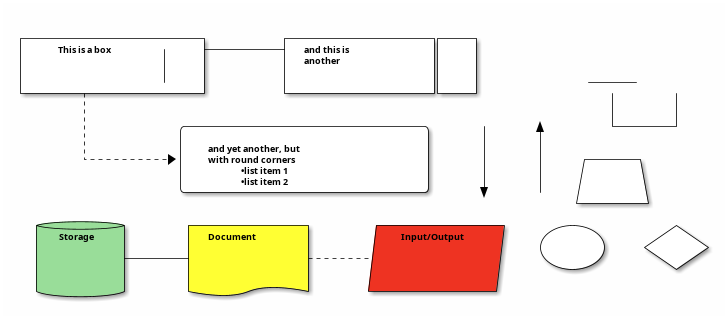

Networks for developing
Putting the works into networks
Neale Swinnerton
2023-01-18
Table of Contents
Prerequisites
net-toolspackage (ifconfig(8),route(8),arp(8)andnetstat(1)et al.) has been deprecated for over 10 years.- prefer
iproute2package. All functions of net-tools and more are available. - Standardised interface and output. Also
--jsonoption makes parsing nicer.
Terminology
ip link1: lo: <LOOPBACK,UP,LOWER_UP> mtu 65536 qdisc noqueue state UNKNOWN mode DEFAULT group default qlen 1000 link/loopback 00:00:00:00:00:00 brd 00:00:00:00:00:00 2: wg0: <POINTOPOINT,NOARP> mtu 1420 qdisc noop state DOWN mode DEFAULT group default qlen 1000 link/none 3: enp88s0: <NO-CARRIER,BROADCAST,MULTICAST,UP> mtu 1500 qdisc mq state DOWN mode DEFAULT group default qlen 1000 link/ether 48:21:0b:36:d3:08 brd ff:ff:ff:ff:ff:ff 4: wlo1: <BROADCAST,MULTICAST,UP,LOWER_UP> mtu 1500 qdisc noqueue state UP mode DORMANT group default qlen 1000 link/ether 84:7b:57:20:f9:54 brd ff:ff:ff:ff:ff:ff altname wlp0s20f3 5: tun0: <POINTOPOINT,MULTICAST,NOARP,UP,LOWER_UP> mtu 1500 qdisc fq_codel state UNKNOWN mode DEFAULT group default qlen 500 link/none1: lo: <LOOPBACK,UP,LOWER_UP> mtu 65536 qdisc noqueue state UNKNOWN mode DEFAULT group default qlen 1000 link/loopback 00:00:00:00:00:00 brd 00:00:00:00:00:00 2: wg0: <POINTOPOINT,NOARP> mtu 1420 qdisc noop state DOWN mode DEFAULT group default qlen 1000 link/none 3: enp88s0: <NO-CARRIER,BROADCAST,MULTICAST,UP> mtu 1500 qdisc mq state DOWN mode DEFAULT group default qlen 1000 link/ether 48:21:0b:36:d3:08 brd ff:ff:ff:ff:ff:ff 4: wlo1: <BROADCAST,MULTICAST,UP,LOWER_UP> mtu 1500 qdisc noqueue state UP mode DORMANT group default qlen 1000 link/ether 84:7b:57:20:f9:54 brd ff:ff:ff:ff:ff:ff altname wlp0s20f3 5: tun0: <POINTOPOINT,MULTICAST,NOARP,UP,LOWER_UP> mtu 1500 qdisc fq_codel state UNKNOWN mode DEFAULT group default qlen 500 link/none 6: br-838b7f23bb93: <NO-CARRIER,BROADCAST,MULTICAST,UP> mtu 1500 qdisc noqueue state DOWN mode DEFAULT group default link/ether 02:42:82:04:a9:90 brd ff:ff:ff:ff:ff:ff 7: br-88ded7088275: <NO-CARRIER,BROADCAST,MULTICAST,UP> mtu 1500 qdisc noqueue state DOWN mode DEFAULT group default link/ether 02:42:66:71:f3:b8 brd ff:ff:ff:ff:ff:ff 8: docker0: <NO-CARRIER,BROADCAST,MULTICAST,UP> mtu 1500 qdisc noqueue state DOWN mode DEFAULT group default link/ether 02:42:38:a1:bf:e9 brd ff:ff:ff:ff:ff:ff
Terminology
ip addr show [devname]
4: wlo1: <BROADCAST,MULTICAST,UP,LOWER_UP> mtu 1500 qdisc noqueue state UP group default qlen 1000 link/ether 84:7b:57:20:f9:54 brd ff:ff:ff:ff:ff:ff altname wlp0s20f3 inet 192.168.1.177/24 metric 1024 brd 192.168.1.255 scope global dynamic wlo1 valid_lft 79772sec preferred_lft 79772sec inet6 2a00:23c7:621c:f201:867b:57ff:fe20:f954/64 scope global dynamic mngtmpaddr noprefixroute valid_lft 295sec preferred_lft 115sec inet6 fe80::867b:57ff:fe20:f954/64 scope link valid_lft forever preferred_lft forever10: tun0: <POINTOPOINT,MULTICAST,NOARP,UP,LOWER_UP> mtu 1500 qdisc fq_codel state UNKNOWN group default qlen 500 link/none inet 172.16.146.85/26 brd 172.16.146.127 scope global tun0 valid_lft forever preferred_lft forever inet6 fe80::27c6:6c2c:e4ed:c888/64 scope link stable-privacy valid_lft forever preferred_lft forever2: wg0: <POINTOPOINT,NOARP,UP,LOWER_UP> mtu 1420 qdisc noqueue state UNKNOWN group default qlen 1000 link/none inet 10.9.0.7/24 metric 512 scope global wg0 valid_lft forever preferred_lft forever
Terminology
- protocols
Terminology
- routes
Terminology
- bridges
Terminology
- tun devices
Terminology
- Miscellaneous
MTUQDISCQLENSO_LINGERSO_NODELAY
Why is it DNS?
Hardest problems in Computer Science
- Naming
- Caching
- Recursion
- Distributed
- unreliable
- badly (or maliciously) configured
Context
- Old Protocol (1987) - RFC1034 / RFC1035
- Updated by 1101, 1183, 1348, 1876, 1982, 1995, 1996, 2065, 2136, 2181, 2137, 2308, 2535, 2673, 2845, 3425, 3658, 4033, 4034, 4035, 4343, 5936, 5966, 6604, 7766, 8482, 8490, 8767
- First step for most network interactions - performance is critical for interactivity.
- We trusted back then. What is Authority? (DNSSec introduces crypto - another problem)
What is stored in DNS?
dig +nocomments any sw1nn.com | sort -r -k 1 -k 4
;; WHEN: Tue Jan 10 13:21:06 GMT 2023
;sw1nn.com. IN ANY
sw1nn.com. 813 IN SOA ns-895.awsdns-47.net. awsdns-hostmaster.amazon.com. 1 7200 900 1209600 86400
sw1nn.com. 813 IN NS ns-895.awsdns-47.net.
sw1nn.com. 813 IN NS ns-427.awsdns-53.com.
sw1nn.com. 813 IN NS ns-1668.awsdns-16.co.uk.
sw1nn.com. 813 IN NS ns-1409.awsdns-48.org.
sw1nn.com. 813 IN MX 5 alt2.aspmx.l.google.com.
sw1nn.com. 813 IN MX 5 alt1.aspmx.l.google.com.
sw1nn.com. 813 IN MX 1 aspmx.l.google.com.
sw1nn.com. 813 IN MX 10 alt4.aspmx.l.google.com.
sw1nn.com. 813 IN MX 10 alt3.aspmx.l.google.com.
sw1nn.com. 60 IN A 143.204.68.64
sw1nn.com. 60 IN A 143.204.68.6
sw1nn.com. 60 IN A 143.204.68.19
sw1nn.com. 60 IN A 143.204.68.109
sw1nn.com. 300 IN TXT "v=spf1 a:gw0.sw1nn.com include:_spf.google.com -all"
sw1nn.com. 300 IN TXT "keybase-site-verification=Sbl5DIqMz2YhOzwJRJ-42cuCc_5bi-IqcDgDoLI4xxY"
sw1nn.com. 300 IN TXT "google-site-verification=j9z8EzWtUwDq8euHd3e6BT9zcWMh7RpGasi4ldaXqeA"
sw1nn.com. 300 IN CAA 0 issuewild ";"
sw1nn.com. 300 IN CAA 0 issue "letsencrypt.org"
sw1nn.com. 300 IN CAA 0 issue "awstrust.com"
sw1nn.com. 300 IN CAA 0 issue "amazontrust.com"
sw1nn.com. 300 IN CAA 0 issue "amazon.com"
sw1nn.com. 300 IN CAA 0 issue "amazonaws.com"
;; SERVER: 127.0.0.53#53(127.0.0.53) (TCP)
;; Query time: 40 msec
;; MSG SIZE rcvd: 826
;; global options: +cmd
; <<>> DiG 9.18.10 <<>> +nocomments any sw1nn.com
Configuring your local DNS server
How does your local machine resolve names?
... hosts: mymachines mdns_minimal [NOTFOUND=return] resolve [!UNAVAIL=return] files myhostname dns ...nameserver 192.168.0.1 nameserver 172.20.0.2 search home lan
--- /dev/fd/63 2023-01-10 13:21:06.305619332 +0000
+++ /dev/fd/62 2023-01-10 13:21:06.305619332 +0000
@@ -1,4 +1,4 @@
-nameserver 192.168.1.254
-nameserver fe80::e675:dcff:fec3:6f93%4
+nameserver 127.0.0.53
+options edns0 trust-ad
search home blandford paxton ad.corp gcp.oscaro.internal oscaro.be oscaro.com oscaro.de oscaro.es oscaro.media oscaro.pt oscaro.team oscaroad.com
resolvectl status
Global
Protocols: +LLMNR +mDNS -DNSOverTLS DNSSEC=no/unsupported
resolv.conf mode: stub
Fallback DNS Servers: 1.1.1.1#cloudflare-dns.com 9.9.9.9#dns.quad9.net
8.8.8.8#dns.google 2606:4700:4700::1111#cloudflare-dns.com
2620:fe::9#dns.quad9.net 2001:4860:4860::8888#dns.google
Link 2 (wg0)
Current Scopes: none
Protocols: -DefaultRoute +LLMNR -mDNS -DNSOverTLS DNSSEC=no/unsupported
Link 3 (enp88s0)
Current Scopes: none
Protocols: -DefaultRoute +LLMNR -mDNS -DNSOverTLS DNSSEC=no/unsupported
DNS Domain: blandford paxton
Link 4 (wlo1)
Current Scopes: DNS LLMNR/IPv4 LLMNR/IPv6
Protocols: +DefaultRoute +LLMNR -mDNS -DNSOverTLS DNSSEC=no/unsupported
Current DNS Server: 192.168.1.254
DNS Servers: 192.168.1.254 fe80::e675:dcff:fec3:6f93
DNS Domain: home
Link 6 (br-838b7f23bb93)
Current Scopes: none
Protocols: -DefaultRoute +LLMNR -mDNS -DNSOverTLS DNSSEC=no/unsupported
Link 7 (br-88ded7088275)
Current Scopes: none
Protocols: -DefaultRoute +LLMNR -mDNS -DNSOverTLS DNSSEC=no/unsupported
Link 8 (docker0)
Current Scopes: none
Protocols: -DefaultRoute +LLMNR -mDNS -DNSOverTLS DNSSEC=no/unsupported
Link 10 (tun0)
Current Scopes: DNS
Protocols: -DefaultRoute -LLMNR -mDNS -DNSOverTLS DNSSEC=no/unsupported
Current DNS Server: 172.16.144.29
DNS Servers: 172.16.144.29 172.16.144.30
DNS Domain: ad.corp gcp.oscaro.internal oscaro.be oscaro.com oscaro.de
oscaro.es oscaro.media oscaro.pt oscaro.team oscaroad.com
multicast DNS
graph


iptables et al.
iptables -nvL